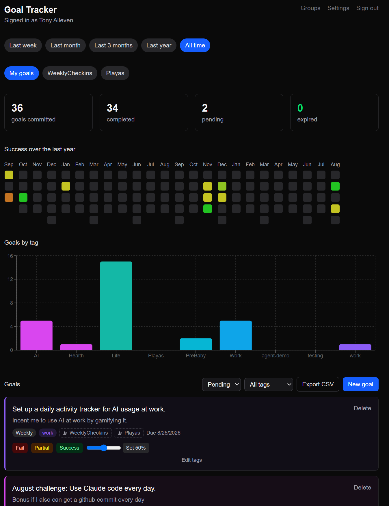

A running log of the things I build on the side — mostly small, purpose-built apps for me and the people around me. No portfolio-speak, no case studies — just what's live, what it does, and what's still on the bench.
A scrapbook-style companion for our Frosthaven board game campaign — a timeline of what happened, and a tavern view of where the party stands right now, both built off the same event log.
frosthaven.tonytinkers.com ↗What it does
Built with
Weekly and monthly goal tracking for me and Kevin — a GitHub-contributions-style heatmap of what actually got done, plus an API so my other agents can read and log goals directly.
goals.tonytinkers.com ↗
What it does
Built with
A location-based scavenger hunt platform — browse, play, and create hunts made of clues tied to a place and a way to verify you found it.
thehunt.tonytinkers.com ↗What it does
Built with
A private, invite-only app for logging family events — births, marriages, relocations, jobs — and seeing how everyone's lives line up across time, place, and age.
timeline.tonytinkers.com ↗What it does
Built with